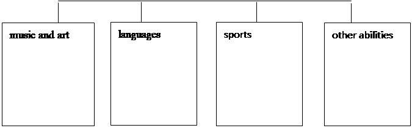

第一部分--专题复习：
Willie and his friends are magicians (魔法师). On his birthday Willie asks his friends Priscilla, Silvester and other children to his home for his birthday party. They give Willie books, foods, pictures and so on. They have a good time.
After some time, Willie says, “I want to go to the swimming pool (游泳池). Swimming is my favorite sport.”
Silvester says, “Let me help you, Willie! I know what to do.” Then Silvester pours some water on the floor (在地上洒水). “Wow! A big swimming pool!” say the children. All the children are happy and they go into the water to swim.
Later Priscilla says, “It's boring to swim like this. Let's all be fish (鱼)!” Then she says, “Fish!” Everyone is a fish in the water now. They swim for hours.
That evening, Willie goes to bed happily. He has a really interesting birthday.
根据材料内容选择最佳答案。
( )1. Willie, Priscilla and Silvester are ______.
A. brothers B. friends C. classmates D. cousins
( )2. What's Willie's favorite sport?
A. Soccer. B. Basketball. C. Tennis. D. Swimming.
( )3. Who makes everyone a fish?
A. Priscilla. B. Silvester. C. Willie's father. D. Willie's mother.
( )4. 下列哪项陈述是正确的？
A. Willie is happy today. B. Priscilla is not a magician.
C. Silvester has many fish at home. D. Silvester doesn't like the swimming pool.
( )5. What's the passage mainly about?（短文主要是关于什么的？）
A. A great magician. B. A big swimming pool.
C. Willie's happy family. D. Willie's birthday party.
第一部分---预习导学案：
Unit 1 Can you play the guitar?
Section B 3a — Self Check (P6)
* 教师寄语：Kind words are the music of the world.善言是世间的音乐。
【学习目标】【学习重点】：
1. 复习掌握本单元的单词及短语。
2. 熟练运用本单元句型:
3. 学会书写应聘广告.
4. 了解和掌握相应的语音知识。
【课堂导学】：
学习任务一:：熟悉掌握本单元单词和短语。
1、自读并记忆单词120页P1--P5的单词短语5分钟；然后请家长听写，至少听15个单词、短语，如果家长不能听写的，听Ms Pan 的录音并按序号听写（选择任一方式，听写后请家长签名并标注已听写。）
学习任务二：
1. 根据上下文推断出空格处填can 还是can’t.
1) A: Can you sing?
B: No, I _________________. But I ___________ play the guitar.
2) A: What can you do?
B: I _________sing and I __________ also play the drums.
3) A: Can you play the piano?
B:No， I ___________. Frank ___________ play the piano.
4) A: Frank, can you play the piano?
B: Yeah, I __________ play the piano, but I __________ sing or dance.
学习任务三：完成3a部分。
1．自读3a的招募广告，用所给的词完成空格。答案写在作业本上。
2．理解广告内容，回答下列问题：
1） music festival意思是______________; musician意思是______________;
2) Who do they want for the music festival? ___________________________;
3) What can the musicians do?
______________________________________________________________
学习任务四：完成Self Check部分。(P6)，全部写在作业本上
1. 根据所学内容，尽可能的在活动1的方框里加些单词和短语，填写有关能力类
别的具体词汇。
|

2. 完成活动2：看看你能写出多少相关的短语
1) play the drums,
2) speak English,
3) help with math,
4) be good at telling stories,
5) be good with old people,
3. 完成活动3：写一写你会做和不会做的事，你爸爸、妈妈（或朋友）会做和不会做的事，至少8句。
学习任务五：了解和掌握相应的语音知识。
1.翻到教材102页单元语音练习，试着读一读。（见Ms. Pan 上传的图片）
【自主检测】：
I、精挑细选
1. We want two good actors _______ our school show.
A. for B. with C. in
2. Does your sister want _______ home?
A. go B. to go to C. to go
3. Mr. Wang is ______ Chinese teacher.
A. our B. us C. we
4. Is your friend a boy _____ a girl?
A. and B. or C. but
5. Musicians ________ for School Music Festival.
A. wants B. want C. wanted
II、翻译官
1.说英语___________________ 2.学校音乐节_____________________
3.弹吉他___________________ 4.击鼓___________________________
5.游泳俱乐部_______________ 6.弹钢琴_________________________
7.打鼓 ____________________ 8.下象棋_________________________
9.be good with kids___________ 10.help kids with swimming___________
11. 善于应付……, 对……有办法_________________________
12.擅长某事_____________________ ；
13.擅长做某事____________________________
14.帮助某人某事________________________
15. 需要某物_____________________；
16.需要某人做某事_______________________
17. 想要做某事______________________
Ⅲ、补全对话
A: Hi, Liu Ying. _______ ________ do you want to join?
B:I want to join the __________ ____________（象棋俱乐部）.
A: Can you ____________?
B: Yes, I can. I can paint ___________. Do you want to ______ the art club.
A: No. I want to join the ________club. I can play _______ well.
B: Really? Welcome to our club.
A: _______________.